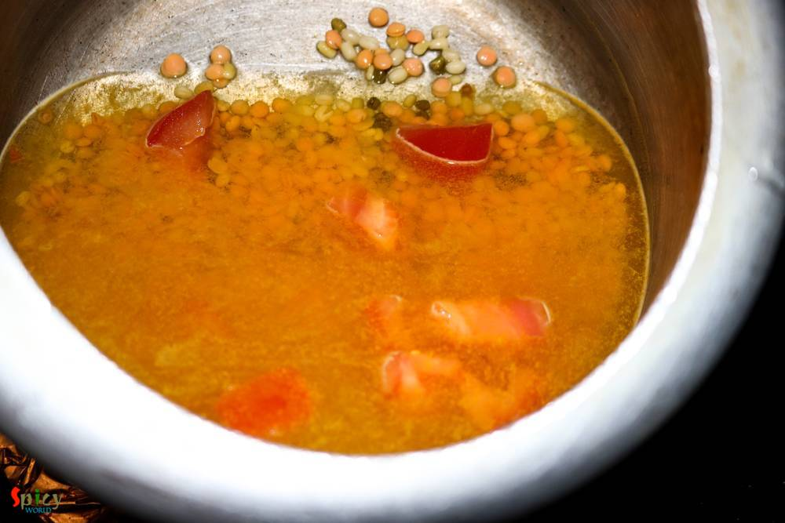
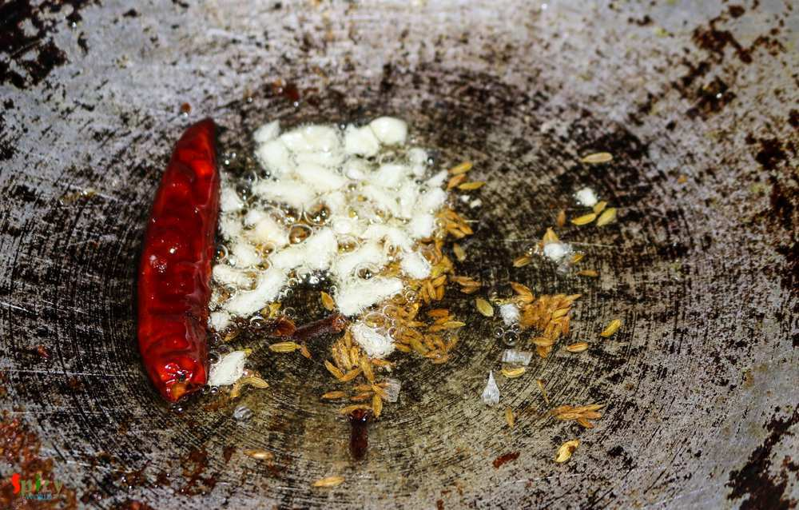
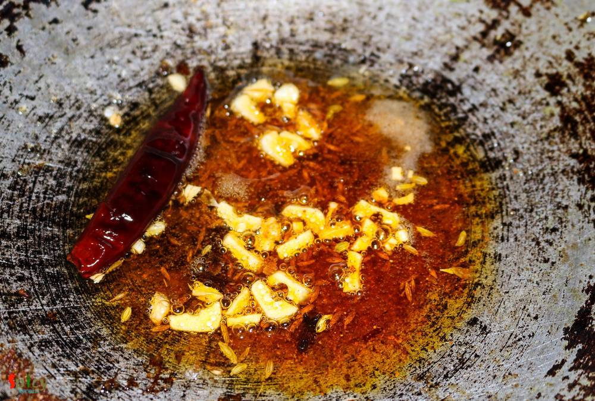
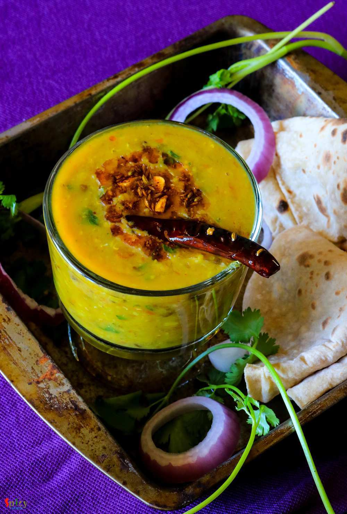

Simple and Easy Recipes
Panchmel Daal / Soup of Five lentils / Panchratan Daal
© 2016 Spicy World, Published on: Jun 24, 2016
Panchmel Daal is a very healthy and traditional Rajasthani dish, which you can make with five types of lentil - yellow moong, urad, masoor, toor, whole moong / chana daal. This daal is also known as 'panchkuti daal'. This dish is fully packed with protien and nutrition, also it requires very less oil. You can enjoy this delicious, thick consistancy daal with plain roti, bati or rice. Not only the flavour of spices but also the taste of those five lentils are unbeatable. Try this easy recipe in your kitchen and enjoy a healthy dinner with your family.

Ingredients
- 2 Tablespoons of each lentil (yellow moong, urad, masoor, toor, chana / whole moong).
- Salt.
- Half tomato, chopped.
- 1 and half Tablespoon of chopped garlic.
- Whole spices (half Teaspoon of cumin seeds, 1/4th Teaspoon of fennel (mouri / sauf) seeds, 2 cloves and 1 dry red chilli).
- 2 Tablespoons of oil.
- Water.
- Spice powder (pinch of hing / asafoetida, a Teaspoon of red chilli powder, a Teaspoon of turmeric powder, half Teaspoon of roasted coriander powder, pinch of garam masala powder).
- Some chopped coriander leaves.


Steps
Wash the lentils three times with water and then soak them for an hour.
Add a cup of water, soaked lentils, pinch of salt, chopped tomato and half Teaspoon of turmeric powder in a pressure cooker.
Give it pressure for 15 minutes. Then let the steam go on its own. The texture of the daal should be mushy.
For tempering, heat oil in a pan.
Then add all the whole spices and chopped garlic. Saute for few seconds.
Now add all of the spice powder, saute for 5 seconds and turn off the heat.
Pour this tempering immediately over the cooked daal. Mix and cook for 2 minutes.
Lastly add some chopped coriander leaves and turn off the heat.
Your panchmel daal is ready ...
Enjoy this hot with roti / rice / bati ...
")